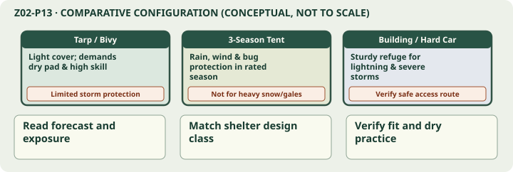

Z02-P13 · Shelter and housing · New manuscript
Match shelter class to weather, terrain and group needs
Select a shelter category suited to forecast wind, precipitation, low temperature and occupant mobility before departure.
When it applies · Planning day emergency kits, three-season backpacking, cold-weather camping or household storm contingencies.
Equipment · Weather forecast, route terrain notes and manufacturer specifications for available tents, tarps or bivies.

Actions
- Compare expected low temperatures, wind exposure, rain or snow loading and insect pressure against the shelter's stated seasonal rating and floor area.[E20, E16, E09]
- Verify that every group member can enter, exit and reach dry insulation easily, accounting for height, mobility limits and gear storage needs.[E20, T10, ED]
- Treat lightweight tarps and emergency bivies as limited weather barriers that require skillful site selection and dry ground insulation rather than all-weather enclosures.[E09, E05, E20]
Failure recognition · Carrying a summer mesh tent or thin foil blanket into forecast freezing rain, high winds or open alpine exposure.[E20, E16, E09]
Verify · Confirm the chosen shelter matches forecast weather, fits all occupants with dry bedding and has been pitched in a dry rehearsal.[E20, ED]
Stop or change course · If forecast storms, wind or cold exceed the shelter's manufacturer design range, postpone, reroute or arrange substantial building refuge.[E16, E17, E20]
Evidence and editorial notes
- E05 · NWS · What To Do If You're Caught in a Winter Storm (current web edition)
- Section: Outside and find shelter · Conditions: Cold, wet or windy winter conditions
Support: Block wind, stay dry and keep off cold ground. Keep exposure reduction separate from making a fire.
Limitations: Improvised windbreaks do not provide rated thermal protection or snow-load capacity. · Conflicting evidence: None; aligns with CDC-H.
Editorial note: Separates wind, ground, and moisture heat-loss pathways. · Specialist reviewer: Cold-weather shelter specialist
Primary source · checked 2026-11-24 - E09 · NPS · Ten Essentials (current web edition)
- Section: Insulation; Emergency Shelter · Conditions: Weather, terrain and expected overnight risk
Support: Extra clothing and usable emergency shelter belong in the route-specific kit.
Limitations: Emergency bivies and space blankets trap condensation and tear easily if misused. · Conflicting evidence: None; requires inspecting and practicing shelter deployment.
Editorial note: Supports overnight emergency shelter readiness. · Specialist reviewer: Cold-weather shelter and field education
Primary source · checked 2026-11-24 - E16 · NWS · Wind Safety (current web edition)
- Section: Wind Safety > High Wind Hazards · Conditions: Forecast or developing high winds, squalls, or straight-line winds
Support: High winds topple trees, loft debris, and stress lightweight shelters beyond fabric and anchor limits; relocate out of timbered fall zones and into substantial shelter before gusts peak.
Limitations: Tents and tarps lack standardized wind-speed survival guarantees across soil types and pitch angles. · Conflicting evidence: None; avoids unvalidated mph ratings for improvised pitches.
Editorial note: Drives high-wind shelter inspection, guying limits, and abandonment thresholds. · Specialist reviewer: Weather safety and shelter equipment
Primary source · checked 2026-11-24 - E17 · National Weather Service · Tornado Safety: During a Tornado (Current web edition)
- Section: During a Tornado: home, outside, vehicle · Conditions: Tornado warning; sturdy shelter may be unavailable
Support: Prefer the suitable lowest interior area of a sturdy building. If unreachable, use NWS location-specific last-resort guidance and avoid overpasses and flood-prone low ground.
Limitations: The branch is contextual. Never portray a ditch, vehicle or makeshift shelter as reliably safe. · Conflicting evidence: See A02 claim audit for boundaries.
Editorial note: Establishes severe-storm abandonment threshold for camp shelters. · Specialist reviewer: Emergency management and meteorology
Primary source · checked 2026-11-25 - E20 · NPS · Camping: What to Bring (current web edition)
- Section: Camping: What to Bring > Shelter and Sleep System · Conditions: Overnight camping across three-season and cool conditions
Support: Match tent/tarp, groundsheet, sleeping pad, and sleeping bag ratings to expected night lows and precipitation; test pitching and inspect poles, zippers, and stakes before departure.
Limitations: Manufacturer comfort ratings assume dry insulation, ground pad use, and adequate caloric intake. · Conflicting evidence: None; reinforces pre-trip inspection and dry-sleep separation.
Editorial note: Anchors manufactured shelter selection, groundsheet fit, and gear readiness. · Specialist reviewer: Shelter equipment and field education
Primary source · checked 2026-11-24 - T10 · FEMA / Ready.gov · People with Disabilities (current web edition)
- Section: People with Disabilities > Make a Plan and Build a Kit · Conditions: Individuals with mobility, sensory, medical, or power-dependent access and functional needs
Support: Build a personal support network, plan accessible evacuation transport, register voluntarily with local emergency registries where available, and plan backup power and spare supplies for medical devices, medications, and service animals.
Limitations: Local registry availability and utility priority-restoration policies vary by jurisdiction. · Conflicting evidence: None; extends generic preparedness plans to accessible requirements.
Editorial note: Directly addresses Z01 accessible emergency planning requirement. · Specialist reviewer: Accessible emergency management and disability preparedness
Primary source · checked 2026-11-24
Source lineage · NPS camping gear and Ready.gov shelter; new manuscript · Classification · New manuscript.